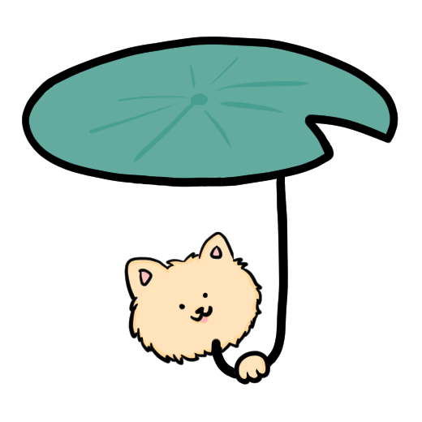

안녕하세요.
신입 개발자 하주영입니다.
본격적으로 개발 공부를 하게 된 것은 22년 9월 국비지원 학원이었습니다.
그러나 국비지원으로 공부하기 전에 개발이라는 분야가 나와 맞나 궁금하여
'정보처리기사'라는 자격증을 공부하였습니다.
22.05 / 22.07 정보처리기사 필기, 실기에 각각 응시를 하게 되었고,
22.09 정보처리기사 합격을 하였습니다.
학원에서 개발 공부는 시작하였지만
5-6개월이라는 시간은 짧았으며
그 사이에 학원에서 공부하는 것만이 아닌
혼자서 공부를 틈틈히 하며 자기 개발을 해왔습니다.
비전공자이다보니 부족한 점도 너무 많았고,
개발이라는 분야는 늘 끊임없이 공부를 해야하는 분야라는걸 알았습니다.
지금까지 해왔던 것처럼 꾸준히 계속해서 공부하며 나아가는 개발자가 되겠습니다.
01 KidsGao
html과 css를 활용하여
만든 KidsGao 홈페이지입니다.
이름 : 하주영
연락처 : 010-1234-1234
이메일 : abcdfg@naver.com